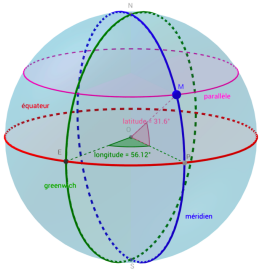

| Contenus |
Capacités attendues |
| GPS, Galileo |
Décrire le principe de fonctionnement de la géolocalisation. |
Activité
Découvrir le principe de la géolocalisation en manipulant des ressources de géométrie dans l’espace
Cette activité a pour objectif de rappeler le principe de repérage sur la Terre et de faire découvrir le fonctionnement
de la géolocalisation à partir d’une modélisation de trois satellites.
Première partie - repérage sur la Terre
Afin de repérer tout point de la Terre, on utilise deux cercles de référence : l’équateur et le méridien de Greenwich.
Chaque point M de la Terre peut alors être repéré en coordonnées géographiques par:
- Sa longitude, angle entre le méridien de Greenwich et le méridien passant par M.
- Sa latitude, angle entre l’équateur et le parallèle passant par M.
Afin que cette représentation soit unique, il faut préciser si la latitude est Nord ou Sud (en fonction de l’appartenance
à un des deux hémisphères) et si la longitude est Est ou Ouest suivant la situation du point M par rapport au méridien
de Greenwich.
Sur l’image ci-dessous, on dit que M a une latitude de 31,6°N et une longitude de 56,12°E.

Ouvrer à l’aide de
GeoGebra
le fichier
villes.ggb.
En déplaçant à l’aide de la souris le point «mobile» M, retrouvez les coordonnées géographiques de chacune des villes
du fichier en complétant le tableau ci-après. Compléter également les longitudes et latitudes en précisant E/O et N/S.
Notez bien qu’il est difficile d’obtenir exactement les coordonnées du tableau en superposant le point «mobile» M sur les
différentes villes, mais en observant les latitudes et longitudes affichées, on y arrive facilement.
| Villes |
Latitude |
Longitude |
|
51,5°... |
0° |
|
48,9°... |
2,3°... |
|
40,4°... |
3,7°... |
|
40,6°... |
116,4°... |
|
39,9°... |
74,1°... |
|
56,8°... |
37,7°... |
|
0° |
79°... |
|
34°... |
18,5°... |
|
33,5°... |
70,7°... |
|
34°... |
151,1°... |
|
41,3°... |
174,8°... |
|
59,9°... |
10,8°... |
|
36,8°... |
10,2°... |
|
1°... |
100,4°... |
Seconde partie - usage de satellites et principe du GPS
-
Maintenant que le repérage d’un point de la surface est défini, il faut définir une technique pour attribuer des
coordonnées à un point de la surface.
-
Un récepteur GPS à la surface de la Terre capte les signaux émis par trois satellites S1, S2 et S3 et calcule les
différences de temps en secondes, entre son horloge interne et les horloges atomiques des satellites. Cette faible
différence va permettre de déterminer la distance du récepteur à chacun des satellites.
-
L’objectif est de positionner le point mobile M correctement et de retrouver dans quelle ville du tableau précédent
le récepteur GPS se situe.
Pour cela, vous travaillerez avec le fichier satellites.ggb dans lequel:
- la sphère «Terre» a pour rayon 1,6 (échelle utilisée pour simplifier, au lieu de 6400 km);
-
trois points S1, S2 et S3, représentent des satellites du réseau GPS.
- Ils sont sur une sphère «orbite» à 20200 km d’altitude donc à _____________ km du centre de la Terre soit sur une
sphère orbite de rayon ____________ dans GeoGebra;
- remplir le tableau, en admettant que la vitesse de la lumière c est de _____________________.
| Satellite |
S1 |
S2 |
S3 |
| Différence de temps (s) |
0,067500000 |
0,072233333 |
0,081533333 |
| Distance (km) |
|
|
|
| Rayon pour GeoGebra |
|
|
|
Rappel:
vitesse = distance / temps
donc distance = __________________
Créez alors dans GeoGebra:
- la sphère sphere 1 de centre S1 et de rayon ______________;
- la sphère 2 de centre S2 et de rayon _____________
- le cercle cercle 12 intersection de sphère 1 et sphère 2.
Conseil pour la suite : masquez les sphères sphère 1 et sphère 2.
Créez ensuite:
- la sphère sphere 3 de centre S3 et de rayon ______________;
- le cercle cercle 23 intersection de sphère 2 et sphère 3;
- les points d’intersection des cercles cercle 12 et cercle 23.
Si vous ne vous êtes pas trompés, l’un des deux points est sur la surface de la Terre ! Déplacer le point «mobile» M pour
trouver ses coordonnées (à afficher dans la barre latérale), il s’agit de la ville ___________.
Faire ensuite des recherches et expliquer les différences entre les systèmes GPS et Galiléo.